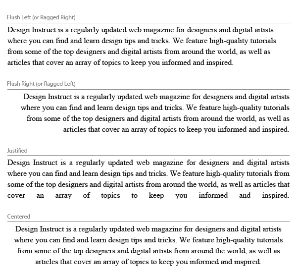

How you align your text has a huge impact on how people will read and perceive it. The decision of alignment should be made with your design theme in mind, and of course, readability and legibility.
Text is aligned to the left. This alignment complements the natural way we read text in western culture. When done correctly, it is one of the biggest factors in improved readability.
Be sure to pay attention to the right-hand side (or the rag). It is important to make sure there is a good balance with line length; make sure that they are not too similar, but also not too far apart.
Text is aligned to the right. If we read from left to right, flush right can hamper the natural flow of the text. Use it as a contrast to the main body of text to highlight complementary copy.
Watch out for punctuation marks on the right-hand side as they can disrupt the alignment.
The start and end of text lines are both aligned to the left and right.
While justified alignment looks clean because it fits neatly into a box, it can also be hard to read because there is less visual cue between the termination of a text line. Variances in spacing can appear between words in order to keep the lines even.
Be vigilant on over- hyphenation, as some programs hyphenate words at the end of text lines to keep the text justified. In addition, some lines might have too much word-spacing, so you might need to adjust line breaks as needed.
Text is aligned to the center of the text area, rather than the edges.
Exercise caution when using centered alignment — there is nothing worse than poorly set centered text. There is no shared point where the line begins and ends, so it can be very hard to read.
Centered text looks best when there are only a few lines of text (2-3 lines).
Done well, centered alignment can look classy and elegant. Be sure that your text area is wide enough to break the text into logical lines and that there is enough contrast between the line length to make the text inviting.
